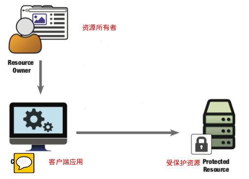
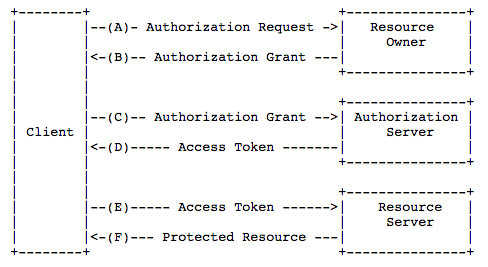
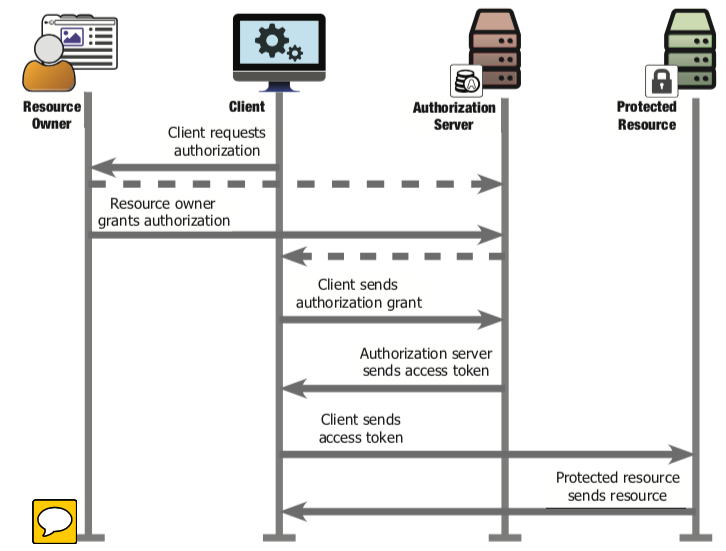

近期研究了一下Ids(最新的版本是id4)，主要是想把我们近期项目中的一些接口能力，开放出来，供其他项目使用。为了避免安全问题，集成了一下id4，在集成的过程中，踩了很多累，着实折腾了一番，现在感觉脑子里这条线算是跑通了，也大概明白这到底是咋回事儿了，趁着现在还明白，赶紧总结下。
开始之前，先推荐几篇文章，正如刚才说的，如果你是刚开始接触id4，那网上的各种资料应该会让你有点摸不着头脑，看了这个看那个，好像都差不多，又好像都不太一样。
首推当然是官方文档
英文官方：https://identityserver4.readthedocs.io/en/latest/（首推）
中文官方：http://www.identityserver.com.cn/
这里呢，首推还是英文的，版本是最新的，虽然都是英文，但技术类文档写的都比较直白，借助下翻译软件，理解应该没问题，但需要读者能坐得住（如果你是英文大牛那就另当别论了）！
中文文档其实也没什么毛病，除了框架版本低一些，它还反而比英文文档更精炼。但我的感觉是，中文文档，更适合你在折腾了一番以后，再回过头来重温一下，这样会更有收获。
官方文档，写的都比较枯燥，因为内容太干了，都是干货，所以阅读的时候，需要有耐心。
另外，我还想推荐一篇，介绍Oauth2.0和openid connect（oidc）区别的文章，我觉得对理解整个id4的工作流程是很有帮助的，地址是：https://www.jianshu.com/p/d453076e6433,再有就是官方的demo
官方demo：https://github.com.cnpmjs.org/IdentityServer/IdentityServer4.git
这个是github的中文镜像地址，克隆速度比较快。
现在网上关于id4的介绍以及案例非常多，所以我也不准备从头到尾都说一遍，当然了，我大概也说不清。
这篇只是就我遇到的场景（我觉得也是比较常见的场景）来介绍一下Id4的使用案例，以及我遇到的一些问题。
#场景一：服务端和服务端之间的接口调用，类似于接入第三方的开放平台
这个场景，就是为了解决我开始提到的，我想把我们项目中开发出来的一些解决特定问题的能力开放出来供其他有同样需求的项目来调用，为了保证安全问题，可以引入id4来为提供认证服务。
这里先声明一点，ids虽然有很高的开发自由度，但毕竟还是属于新的应用框架，如果你所用的项目之前有统一的认证服务端，或者有其他的统一认证方式，那我建议在引入id4之前，先考虑一下系统的复杂度，是否兼容等问题。
因为这里的接口调用，是在服务端进行的，且均为内部系统，当然外部也可以，只要是授信的就可以，所以我们选择ClientCredentials的形式来完成授权（Authorization）
（注意，Authorization是授权，还有一个和他非常接近的词是Authentication，这个是认证的意思，在ids里认证一般是只身份认证，授权和认证代表的是不同的意思，不同的流程，要区分开）。
这个场景流程图是这样

这个模型，文档上说的都很清楚，我在简单介绍下，
模型里的资源所有者(resource owner,下简称RO)，应该是指用户，客户端（client）就是浏览器，桌面软件或者其他终端，受保护的资源（protected resource，下简称PR）就是我们的api；
那么为了让RO通过client访问到PR，我们需要授权服务器对客户端进行授权（Authorization）

增加授权服务器后上面图1 会变成这样

其实我们可以通过实际生活的场景，来模拟一下这个过程；
比如，我这里把这个流程当成一个出入境的整个流程，首先我们作为地球人，有权利去地球上大部分的国家或地区去旅行，当我们要出国或者取港澳台地区旅行的时候，需要先去行政大厅办理护照或者通行证等证件，持有对应的证件，我们就可以在目的地停留，当然这个证件也是有有效期的，当我们停留时间过长的时候，可能要计时延长有效期或者即时返回；
在这个过程里，我们把授权服务器当做是行政大厅，我们就是资源所有者，我们旅行的目的地就是受保护的资源，我们只有持有行政大厅颁发给我们的证件，才能到达目的地，而该证件也是有有效期的。
好了，大概的流程就是这样，看下代码吧，我这里就以官方的demo在结合一些自己的项目实例来演示（其实演示的部分等你看多了网上的案例，会觉得这部分最无聊了~）
先看下服务端的代码结构
这里引用了IdentityServer4这个包，另外两个一个是做第三方登录的，另一个是日志组件，我们先不管；
这个官方的demo里，集成了QuickStartUI,里面有一些基本的控制器和界面模型代码，但我们的关注点也暂时不放在这里，因为这部分如果正式使用的话，一定会有调整。
只看服务注入的部分，
对了，identityserver4是.net core框架下的认证授权组件，不支持.netframework框架，所以我们的授权服务只能采用.net core框架，这个因为是以侵入式的形式集成到现有项目中的，所以问题不大，我们只需要新建一个.net core框架的项目就可以了。
来看下代码，
先是config类，这个类里，划定了我们要保护的API范围，客户端和用户认证信息（这部分我就简单过一下，官方文档里都有，只说下我觉得需要注意的地方）
1 | /// <summary> |
代码一灌，东西就多了。。。
config只是个类名，想叫啥都行，比如OauthConfig，然后在startup里注册服务
1 | public void ConfigureServices(IServiceCollection services) |
配置完成后，我们访问链接地址：http://localhost:5000/.well-known/openid-configuration，来检查我们的配置是否正确
看到如下界面，则证明我们配置成功，同时在该界面，我们可以看到非常多有用的信息
在通过postman来调试下获取token
在完成服务端的流程后，看下要保护的资源项目，也就是我们的API接口
创建接口的部分直接跳过，直接看配置
1 | public void ConfigureServices(IServiceCollection services) |
注册服务中间件
1 | app.UseAuthentication(); |
再在接口controller添加特性认证标识[Authorize]
接口部分完成后，开始客户端，因为是服务端间调用，我们还是以demo为例，我就不贴整段的代码了，就看关键的部分
先到令牌服务端获取token
1 | var disco = await client.GetDiscoveryDocumentAsync("http://localhost:5000"); |
在把token写入到header，获取接口资源
1 | // call api |
看下结果
到此通过凭证的形式完成整个授权，鉴权的流程就跑完了
这个场景其实整体评估下来，还是比较容易跑通的，结合文档和官方的demo应该不会有什么难点，应该很快就可以走通。
但是有一个场景内的场景，就是，我们的接口如果采用的是.netframework平台，那么就需要依赖identityserver3，或者基于Owin来自己实现接口端的授权认证配置
我这里介绍一个id3的配置案例,新建或者在程序入口函数处增加Startup类
1 | internal class Startup |
我们公司内部有一个统一用户中心的服务，其也实现了一个基于owin的实现方案，
1 | public void ConfigureAuth(IAppBuilder app) |
需要注意的是，这种方式需要以配件的形式注入到现有的项目
1 | [] |
说几个注意点吧,客户端没什么可说的，主要在授权服务端和RP端
1.如果我们的授权服务，只是接入当前场景也就是基于凭证的授权模式，那startup里不需要增加配置cookie的策略，在注册服务的时候，也不需要注册Authorization和Authentication，只注册IdentityServer服务即可，官方的demo里包含了quickstart.ui也就是包含了openid connect（oidc）的认证流程，所以这里的服务配置和注册显得繁琐一些。
也就是说，如果我们只是准备把授权流程应用在服务端之间调用的场景，那完全没必要写这么多
2.在配置IdentityServer的时候，我增加了一个默认规则，定义了AccessTokenJwtType是“JWT”，这点是用于跨版本情况的，比如你的API项目版本是.netframework的版本，无法引入id4的验证包，只能引入id3的验证包，而在id4的服务中，tokentype的默认值是“at+jwt”,在接口端进行认证的时候会无法通过，提示头部不合法，调整后问题解决；
3.在config配置类里，我配置了3种类型的client，分别对应了3中不同的应用场景，分别是，凭证，密码，和授权码三种授权类型，这也是常用的几种。
在id4的结构里，还包含其他多种类型，我这里截了张图看一下
更多关于OIDC的授权类型的内容，大家还是去看文档吧；
4.注册服务的时候，要注意顺序。
5.刚开始遇到服务端发证和pr端验证的版本不一致的情况，其实处理起来还是挺费劲的，还是需要结合文档自己折腾一边，跑通后再看，就顺畅许多
#场景2：前端站点通过网络请求和后端通信，来完成认证授权
其实这种场景就是文档里提到的JavaScript客户端场景，或者mvc客户端场景，比较类似。
中文文档里，关于这两种场景给的授权类形式Implicit类型的，而官方的demo里给的是授权码也就是code的类型。
这种场景比较特殊，因为这种类型的客户端都是要经过浏览器的，这种场景，应该来说更加的大众化。
在场景1里贴出的关于服务端和pr端的代码，已经包含了兼容js客户端的内容，这里就着重说下客户端的代码；
官方已经介绍了Implicit的授权方式，我前面在服务端贴出的代码里，没有增加Implicit的授权类型，而是Code类型，这里就以code类型来介绍好了
从结果上来看，两种方式都能打到效果，至于他们的区别，建议大家还是看下文档，我个人还是比较推荐code的形式
直接看官方的demo，
其实可以使用任意前端框架，在静态文件中引入oidc-client.js，剩下的就是逻辑代码了；
html页面，我们直接跳过，来看app.js
1 | /// <reference path="oidc-client.js" /> |
看下页面的执行效果


如此，完成客户端的认证，授权流程
未完待续。。。